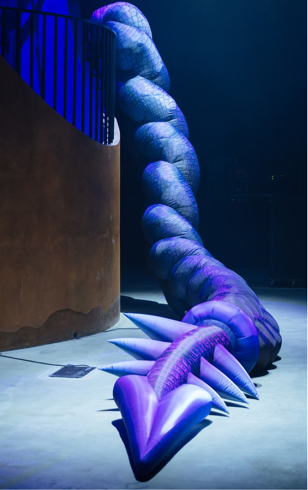

ЗАДАЧА
Объединить распределённую команду и запустить новые ценности Циана через общий живой опыт.
ЛИЧНОЕ ПОРТФОЛИО2026
CVCulture launch
Мы превратили новые ценности Циана в живой культурный код — на стыке русской визуальной традиции, технологичности и общего ритуала для команды.



Объединить распределённую команду и запустить новые ценности Циана через общий живой опыт.
Показать ценности как собственный культурный код Циана — на стыке локальной эстетики и технологий.
Ивент, где визуальный стиль, сценография, лайны и шоу-часть работали как единая система знаков.
Пересобрали русский культурный код под язык Циана: берёзы, орнаменты, сказочные формы и обрядовые символы стали светом, графикой, сценой и digital-образами.
Новые ценности встроили в лайны, названия, навигацию, сценарий, визуал и сценографию — так команда считывала их через саму атмосферу события.
Хоровод стал живой метафорой команды: люди собирались в общий круг, включались в единое движение и буквально проживали идею «мы» через русский ритуал.
Фристайл превратили в народный баттл: участники придумывали строки на русские мотивы, отвечали друг другу, соревновались и собирали реакцию зала.
Новый год стал запуском «культурного кода»: технологичный Циан показал новые принципы через локальность, ритуалы, юмор, свет и общее действие.


ОТКРЫТА К НОВЫМ ЗАДАЧАМ
И ИНТЕРЕСНЫМ БРИФАМ